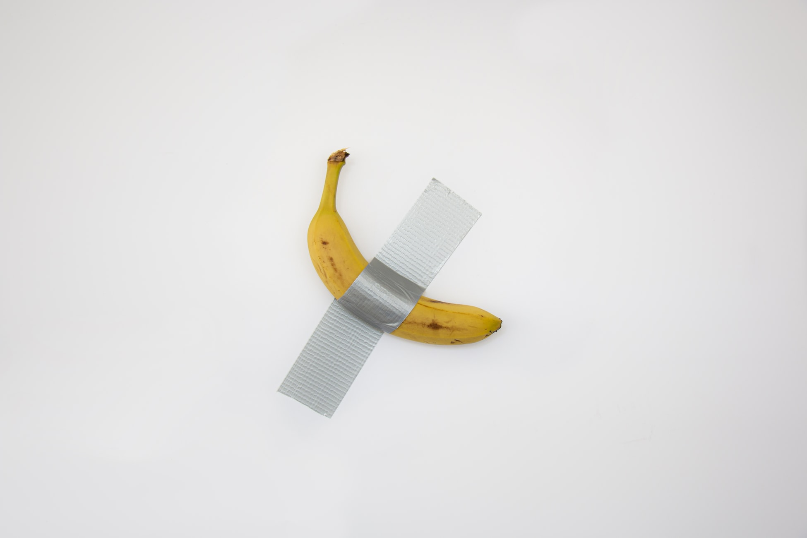
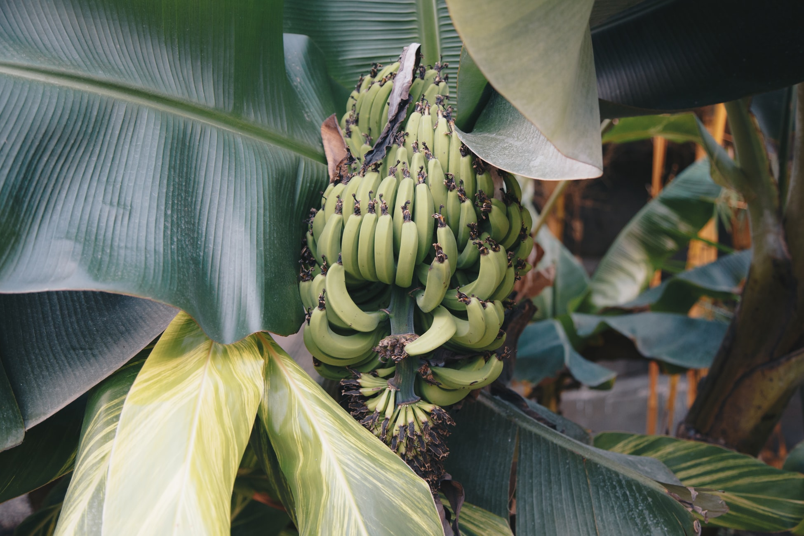
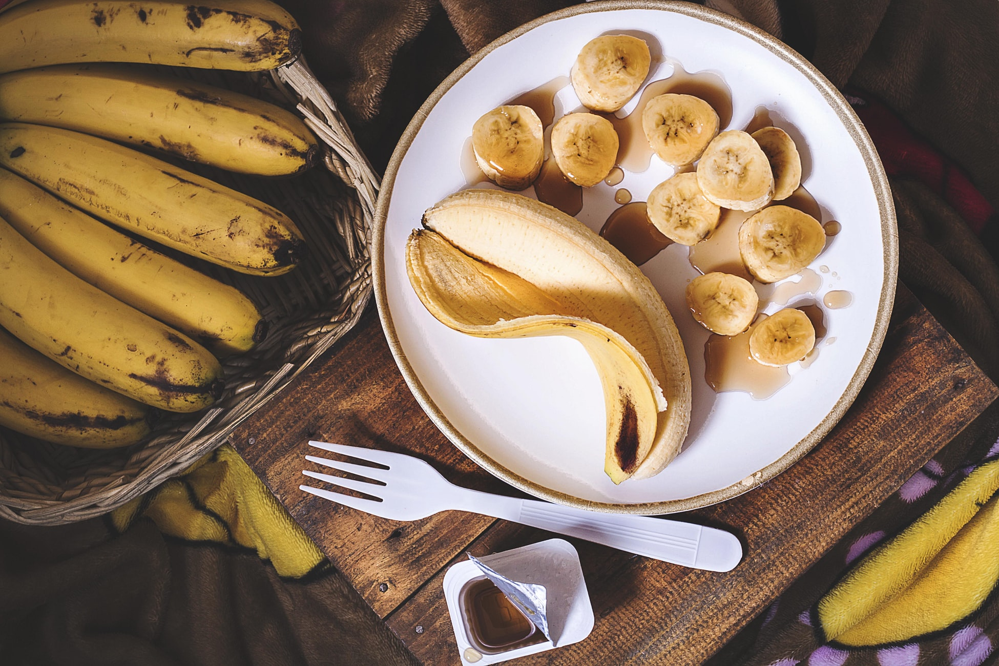
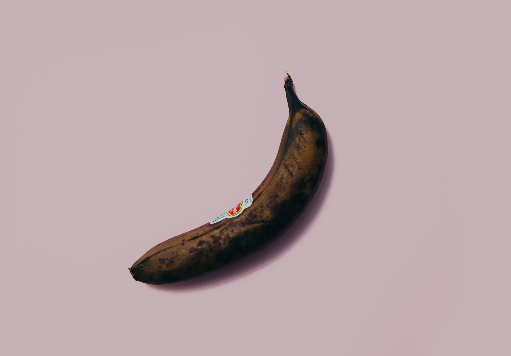
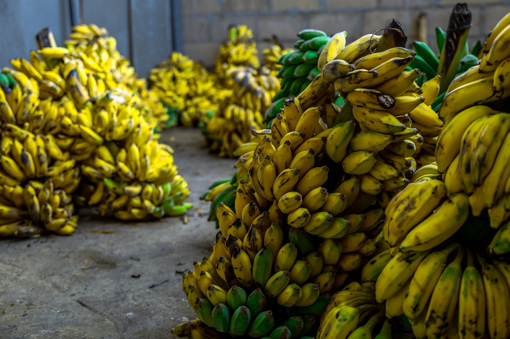
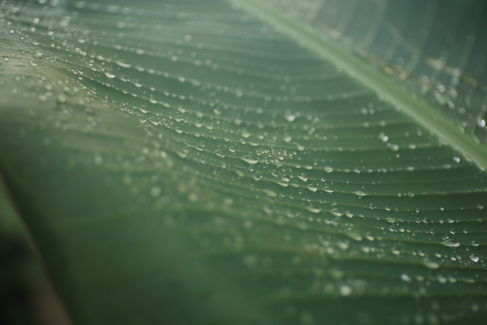

Fungus devastating banana crops found >
Gone are the days of going through the tiring chore of actually peeling a banana >
"The banana is supposed to be a banana." >
One of the world's most-loved fruits is once again under threat >
Getting enough potassium could make a huge difference to your health >
Supermarkets ramp up efforts to combat food waste >
Retailers and consumers need to share the burden of producers >
Malay cultural scientist advocating for a return of banana leaves as food wrappings >
Travelling from tropical plantations to grocery aisles, getting a banana to market is a complex process >